Dr. Glauber Voltan · NervUS · Cursos de ultrassom e exames
Os anúncios ativos de 21 médicos e escolas que vendem curso, imersão ou formação sobre exames para médicos e fisioterapeutas: ultrassom musculoesquelético e de nervos, POCUS, Doppler, ecocardiograma, ECG e radiologia. Tudo tirado da Biblioteca de Anúncios da Meta: o link de cada um, as peças que estão rodando e o que vale observar. Os primeiros são os mais próximos do tema do Dr. Glauber; depois vêm as maiores operações de curso de exame do país. É referência para as próximas gravações da Imersão Prática, da Biblioteca de Casos Clínicos e da Formação NervUS.
Lemos 462 anúncios, entre os 1254 que estas páginas mantêm ativos hoje. Três números resumem como esse mercado anuncia:
São a prova mais forte de que o formato funciona.
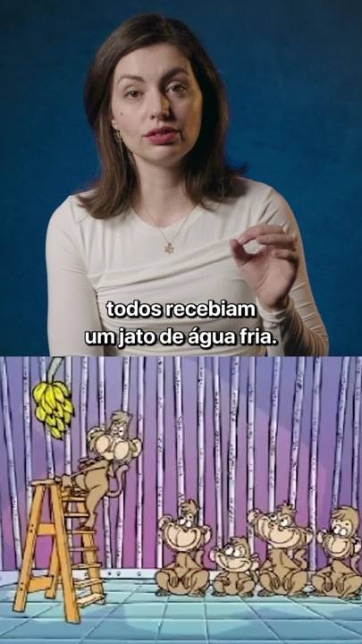
568 dias Portal Edus - Dr. Augusto Teixeira · Vídeo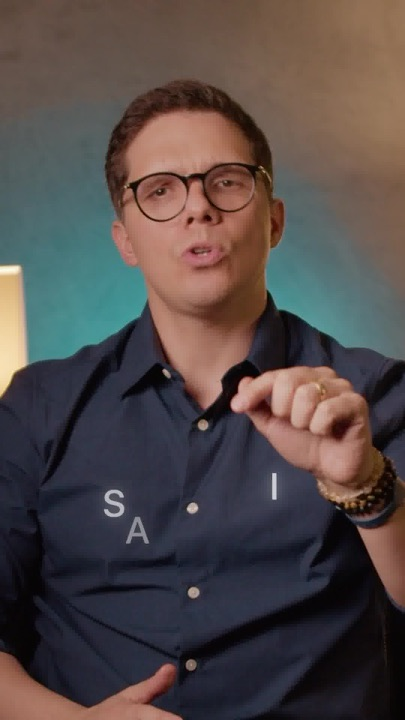
568 dias Portal Edus - Dr. Augusto Teixeira · Vídeo 463 dias Portal Edus - Dr. Augusto Teixeira · Vídeo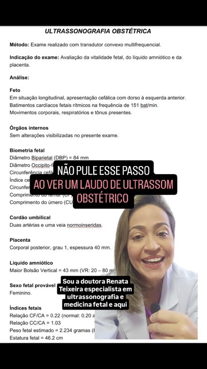
447 dias Dra. Renata Teixeira · Vídeo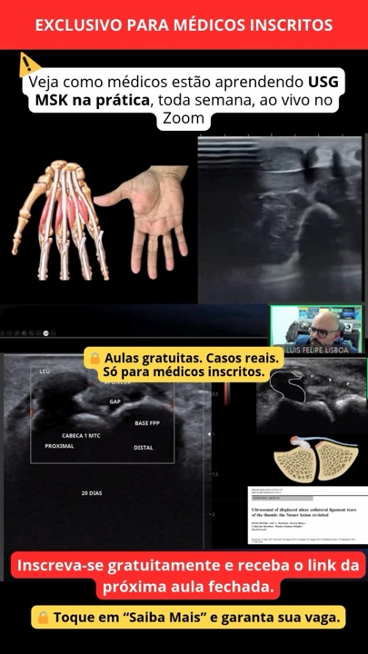
380 dias Dr Luís Felipe Lisbôa · Vídeo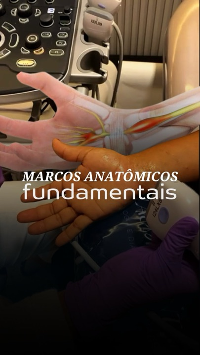
323 dias Dra. Claudia Fontan · Vídeo“Médico, …”, “Colega, …”, “Doutor(a), qual está restrito?”, “[EXCLUSIVO PARA MÉDICOS]”. 68 dos 386 anúncios com legenda chamam a profissão logo na abertura ou dizem que é exclusivo para médicos. Quem não é do público sai sozinho, e quem é se reconhece no primeiro segundo.
Fetalmed · Dra. Renata Teixeira · Vexus · Túlio Ravelli · João Paulo Queiroz · Ricardo Tunes“Qual desses fetos tem restrição de crescimento?”, “Muita gente erra o diagnóstico desse ECG!”, “Tem alteração da contratilidade segmentar?!”, “Médico, qual sua hipótese diagnóstica?”. O médico tenta responder de cabeça e percebe o que ainda não sabe. É o formato natural da Biblioteca de Casos Clínicos.
Dra. Renata Teixeira · Cardiopapers · EcoDescomplicado · Luís Felipe Lisbôa · DeuLaudo“Não pule esse passo ao ver um laudo de ultrassom obstétrico” está no ar há 447 dias; os marcos anatômicos do punho, há 323. Um minuto de aula prova que o professor sabe ensinar e não envelhece, porque não tem data nem oferta.
Dra. Renata Teixeira · Dra. Claudia Fontan · Nexus Point-of-Care · Escola do Ultrassom“Você já travou diante de um ducto venoso alterado?”, “Você domina o ECG ou torce para o plantão acabar?”, “Ter certeza no meio do exame não deveria ser sorte”. Segurança, confiança e insegurança aparecem em 101 dos 386 anúncios com legenda. E os melhores tiram a culpa do médico: “não é falta de esforço, é falta do raciocínio certo”.
Fetalmed · Cardiopapers · Túlio Ravelli · Vexus · Marcelo Farani“O que escrever no laudo”, “checklist de laudo”, “sua maior dificuldade na hora de laudar”, “executar e laudar”. 55 dos 386 anúncios com legenda falam de laudo. É onde o médico sente a insegurança por escrito, e é um tema que o Dr. Glauber já trabalha em aula.
Dra. Renata Teixeira · Fetalmed · João Paulo Queiroz · EcoDescomplicado · DeuLaudoChecklist, e-book e minicurso de R$ 97 que levam à mentoria; atlas de R$ 97 que leva ao presencial; introdução de R$ 97 que leva à formação; aula de revisão que leva ao treinamento de 15 dias. É a mesma escada que a NervUS já tem: Biblioteca de Casos Clínicos, Imersão Prática e Formação.
Dra. Renata Teixeira · Fetalmed · Cardiopapers · Túlio Ravelli · Marcelo FaraniDr. Helio Bergantini com “aluno Carevasc” na tarja, a “Quarta turma” do USPINE, o depoimento do Alberto Serrate. E as maiores operações testam capa, não texto: Cardiopapers roda 40 anúncios com 7 legendas; CepExpert, 30 com 2; Marcelo Farani, 17 artes com 2.
Carevasc · Leandro Dini · Sonacademy · Cardiopapers · CepExpert · Marcelo Farani01
Radiologista · imersão prática em articulações e nervos periféricos (Recife)
Biblioteca de anúncios ↗ @claudiafontanradiologia ↗
🔍 Identificando marcos anatômicos no punho com USG Você sabe localizar os principais pontos de referência do túnel do carpo na ultrassonografia? 📸 Uma leve pressão com o…
Botão: Perfil do Instagram ver anúncio ↗
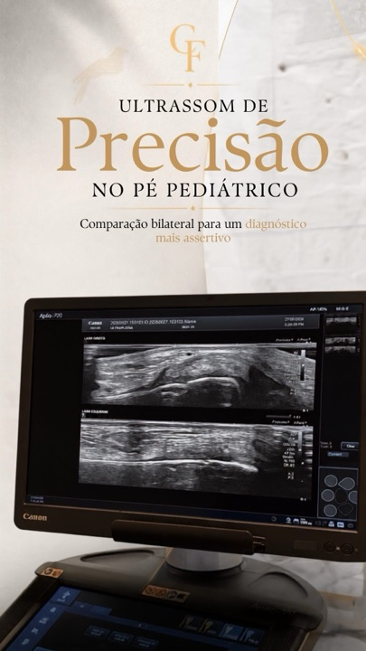
Quando avaliamos crianças e adolescentes, o ultrassom exige um olhar ainda mais cuidadoso. Neste caso, um paciente jovem apresentava dor no pé, especialmente durante a…
Botão: Perfil do Instagram ver anúncio ↗
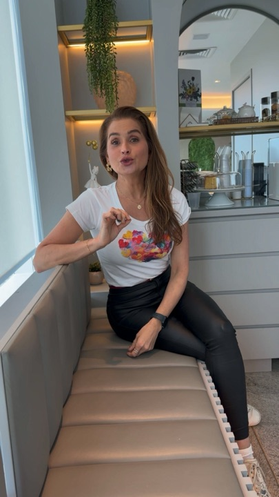
Nos dias 26 e 27 de setembro, em Recife, teremos uma imersão prática em ultrassonografia das articulações dos membros superiores e inferiores e dos nervos periféricos.…
Botão: WhatsApp ver anúncio ↗
02
Ultrassom musculoesquelético para médicos · imersão online
Biblioteca de anúncios ↗ @drluisfelipelisboa ↗
Médicos de diferentes especialidades estão aprendendo ultrassonografia musculoesquelética na prática, com aulas semanais ao vivo e casos clínicos reais. 🔒 Aulas…
Botão: Saiba mais ver anúncio ↗
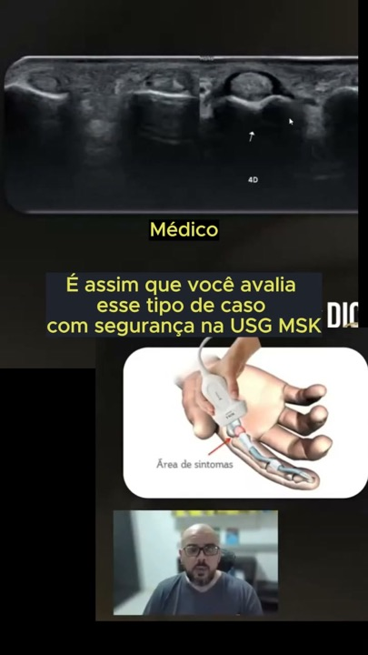
Imersão Prática para médicos que sabem teoria mas querem praticar de verdade. Ortopedistas, radiologistas, anestesistas, reumatologistas e clínicos: na Imersão você…
Botão: Saiba mais ver anúncio ↗
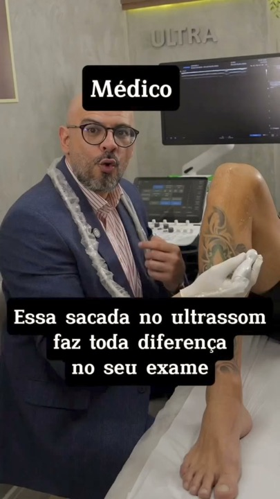
Imersão online, 19/09. Vagas limitadas.
Botão: Saiba mais ver anúncio ↗
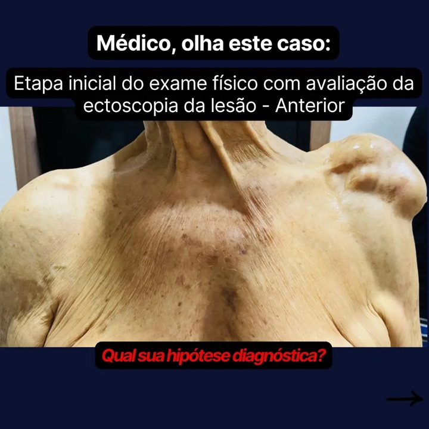
Médico, qual a sua hipótese diagnóstica? ➡️ Se quiser dominar casos como este, participe da Imersão USG MSK na Prática e ganhe segurança em exames e procedimentos…
Botão: Saiba mais ver anúncio ↗
03
Ultrassom musculoesquelético e intervenções guiadas · formação de médicos
Biblioteca de anúncios ↗ Página no Facebook ↗
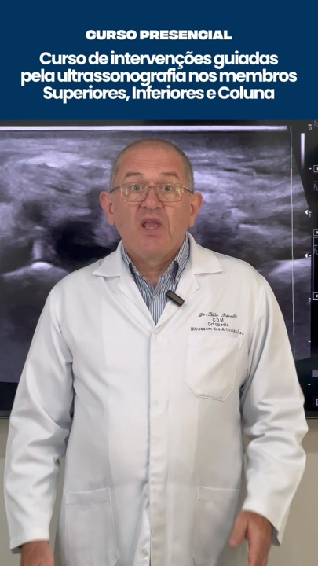
Participe do Curso de Intervenções Guiadas pela Ultrassonografia nos Membros Superiores, Inferiores e Coluna com o Dr. Túlio Ravelli. Um curso desenvolvido para ensinar…
Botão: Cadastre-se ver anúncio ↗
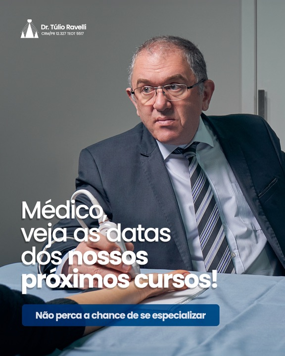
🩺 Atenção, médico! Ainda dá tempo de elevar sua prática clínica em 2026 com cursos de Ultrassonografia e Intervenções Guiadas por Ultrassom. Aprimore seus diagnósticos,…
Botão: Cadastre-se ver anúncio ↗
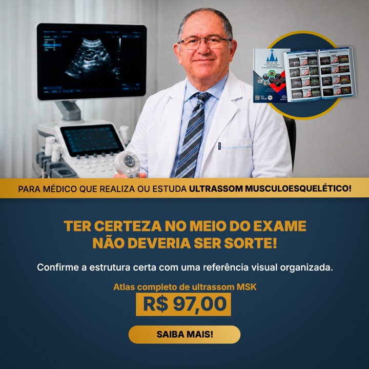
Atlas de Ultrassonografia dos Membros Superiores e Inferiores com imagens para consulta rápida 💻🩺🩻 Um material visual, técnico e organizado para consultar estruturas,…
Botão: Saiba mais ver anúncio ↗
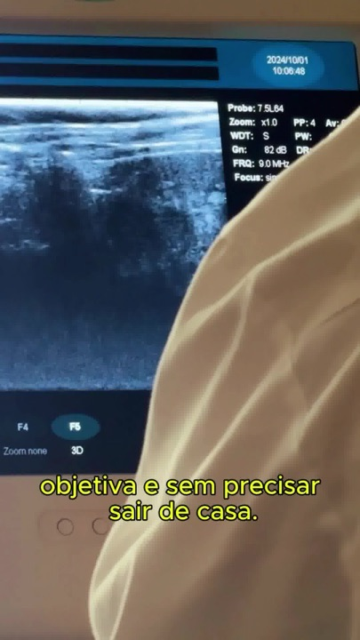
Aprenda a interpretar ultrassons musculoesquelético com confiança. Método 100% prático e adaptável à sua rotina: ✅ Diagnósticos mais confiáveis para membros superiores e…
Botão: Saiba mais ver anúncio ↗
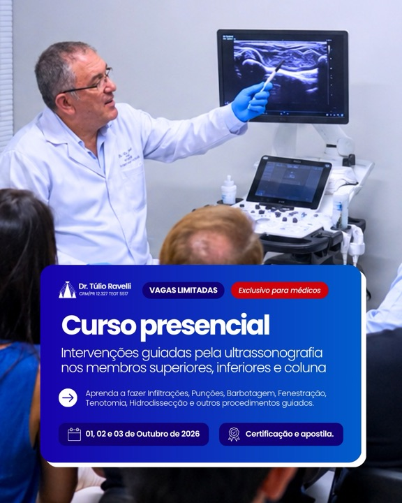
Médico, aprimore sua prática em intervenções guiadas pela ultrassonografia com uma formação presencial voltada à aplicação prática dos procedimentos. Nos dias 01, 02 e…
Botão: Cadastre-se ver anúncio ↗
04
Ultrassonografia cinesiológica para fisioterapeutas
Biblioteca de anúncios ↗ @marcelofarani ↗
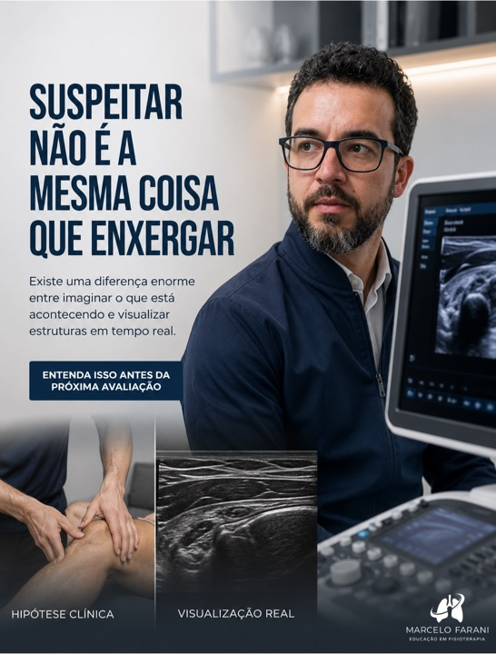
A Ultrassonografia Cinesiológica já está no consultório ao lado. Não é exagero. Não é hype. É uma realidade crescente na fisioterapia brasileira, e quem está aprendendo…
Botão: Saiba mais ver anúncio ↗
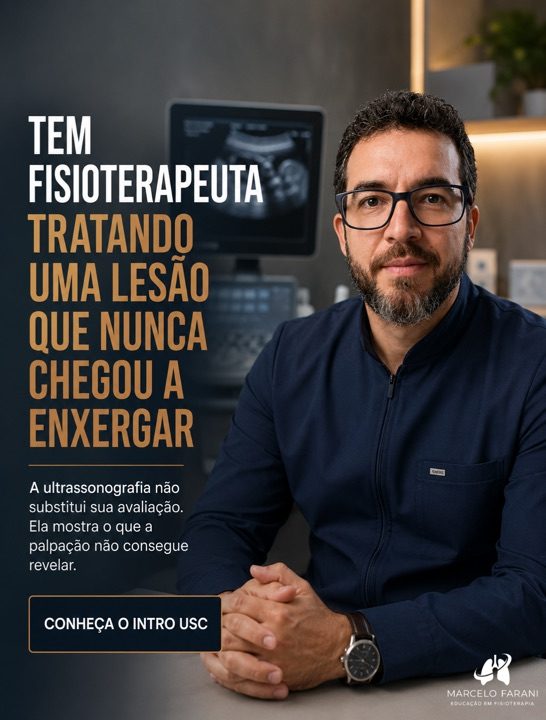
A Ultrassonografia Cinesiológica já está no consultório ao lado. Não é exagero. Não é hype. É uma realidade crescente na fisioterapia brasileira, e quem está aprendendo…
Botão: Saiba mais ver anúncio ↗
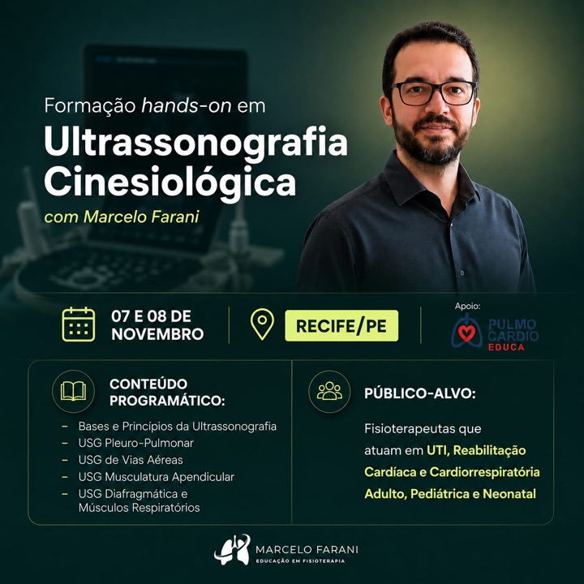
Gostaria de te convidar para um MEGA evento presencial comigo, uma Formação de Ultrassonografia para fisioterapeutas, em Recife/PE. Nele você vai descobrir o passo a…
Botão: Saiba mais ver anúncio ↗
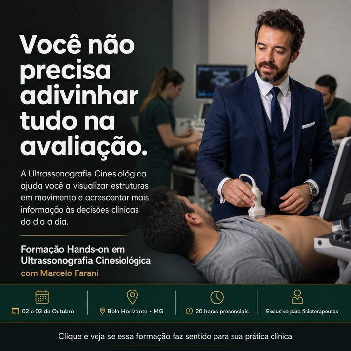
Gostaria de te convidar para um MEGA evento presencial comigo, uma Formação de Ultrassonografia para fisioterapeutas, em BELO HORIZONTE-MG. Nele você vai descobrir o…
Botão: Inscrever-se agora ver anúncio ↗
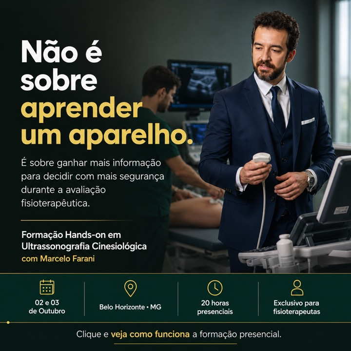
Gostaria de te convidar para um MEGA evento presencial comigo, uma Formação de Ultrassonografia para fisioterapeutas, em BELO HORIZONTE-MG. Nele você vai descobrir o…
Botão: Inscrever-se agora ver anúncio ↗
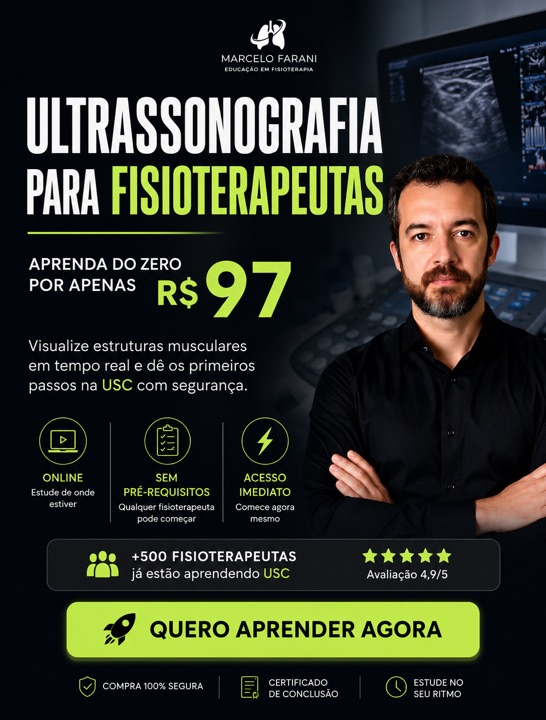
A Ultrassonografia Cinesiológica já está no consultório ao lado. Não é exagero. Não é hype. É uma realidade crescente na fisioterapia brasileira, e quem está aprendendo…
Botão: Ver detalhes ver anúncio ↗
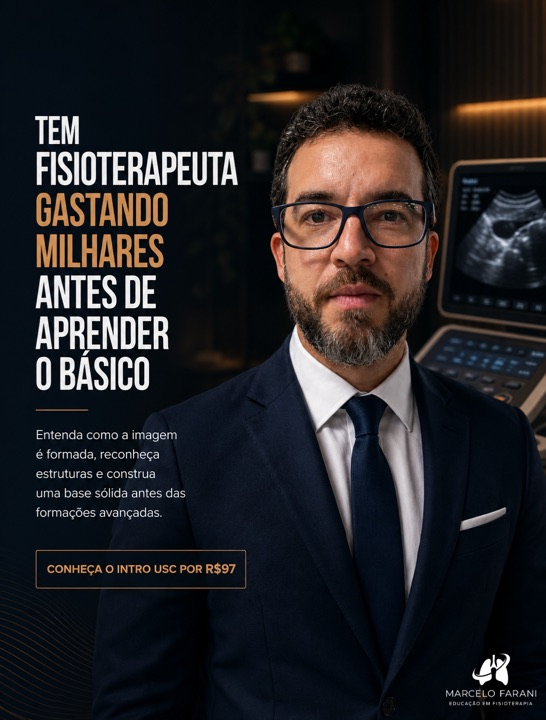
A Ultrassonografia Cinesiológica já está no consultório ao lado. Não é exagero. Não é hype. É uma realidade crescente na fisioterapia brasileira, e quem está aprendendo…
Botão: Ver detalhes ver anúncio ↗
05
Afya Cardiopapers · ECG e atualização em cardiologia para médicos
Biblioteca de anúncios ↗ Página no Facebook ↗
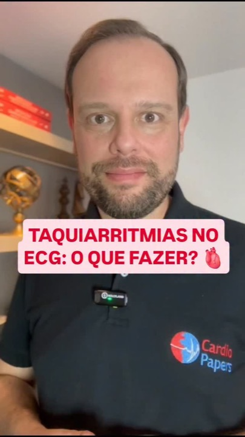
Você domina o ECG ou torce para o plantão acabar? 😅 Hoje, 20h, vamos acabar com essa insegurança na nossa ÚLTIMA aula de revisão. Diagnóstico e conduta sem enrolação.…
Botão: Perfil do Instagram ver anúncio ↗
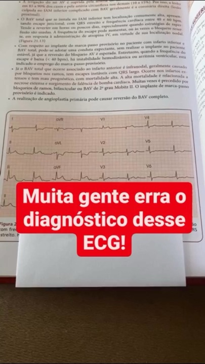
Interprete o ECG com rapidez e sem medo em 15 dias Treinamento simples para que você consiga dominar a interpretação do ECG em 15 dias, mesmo em casos mais complexos
Botão: Saiba mais ver anúncio ↗
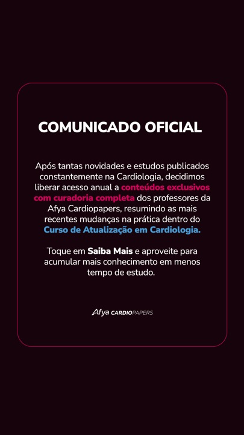
Enquanto você atende, opera e faz plantão, a Cardiologia não para de mudar. Novas diretrizes, estudos e medicamentos surgem toda semana — e ler tudo sozinho é…
Botão: Saiba mais ver anúncio ↗
06
Especialista em ultrassonografia e medicina fetal · ensina a interpretar laudo obstétrico
Biblioteca de anúncios ↗ Página no Facebook ↗
Não pule esse passo ao ver um laudo de ultrassom obstétrico. Colega, as medidas estão ali descritas para serem interpretadas. Não fique vidrado somente no peso fetal…
Botão: Perfil do Instagram ver anúncio ↗
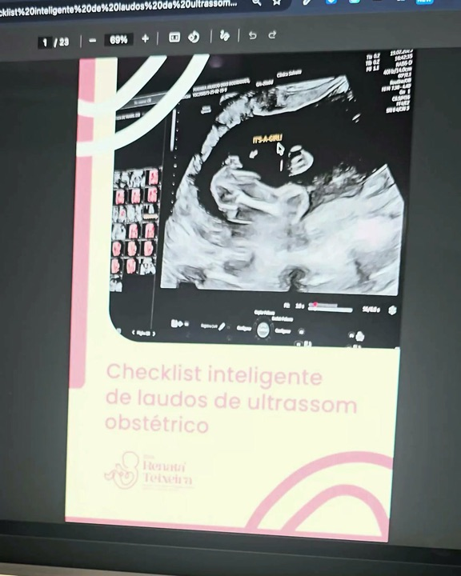
Esse é o checklist de laudo de ultrassom obstétrico que eu abro no consultório. Um bloco por tipo de exame. Dentro de cada um, a lista do que checar no laudo. Você lê…
Botão: Saiba mais ver anúncio ↗
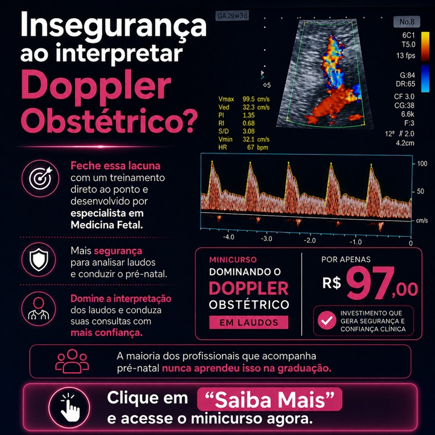
Nem todo Doppler “normal” significa tranquilidade no pré-natal. Existem detalhes que mudam completamente a interpretação de um bebê pequeno e a conduta da gestação. É…
Botão: Saiba mais ver anúncio ↗
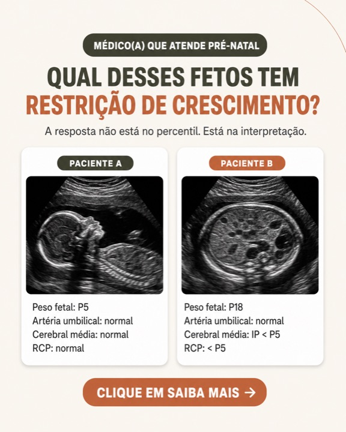
Um deles tem restrição de crescimento. O Paciente A está no percentil 5, com todo o Doppler normal. O Paciente B está no percentil 18, mas com a relação…
Botão: Saiba mais ver anúncio ↗
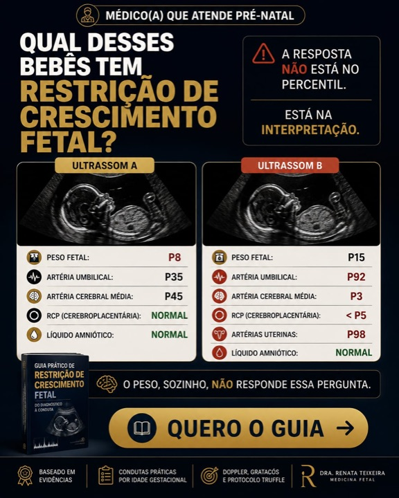
Dois ultrassons. O bebê A pesa menos (P8) — Doppler todo normal. O bebê B pesa "melhor" (P15) — mas a umbilical está no P92, a cerebral média no P3 e a RCP abaixo do P5.…
Botão: Ver detalhes ver anúncio ↗
07
Formações online para médicos: paciente grave e POCUS
Biblioteca de anúncios ↗ Página no Facebook ↗
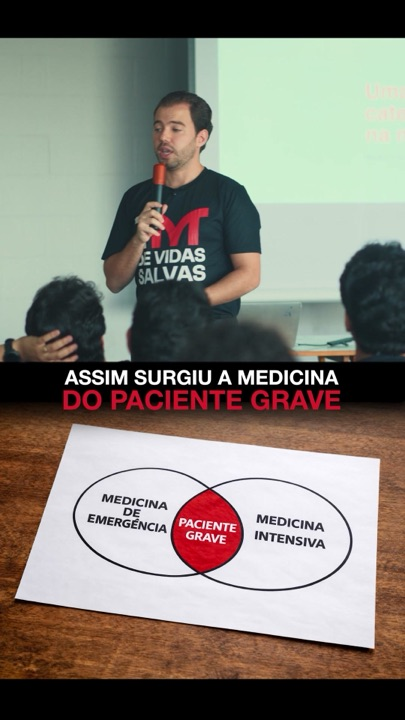
Emergência e UTI têm algo em comum: o paciente grave. No papel, são especialidades. No plantão, é a mesma cena: monitor apitando, família esperando, segundos valendo…
Botão: Perfil do Instagram ver anúncio ↗
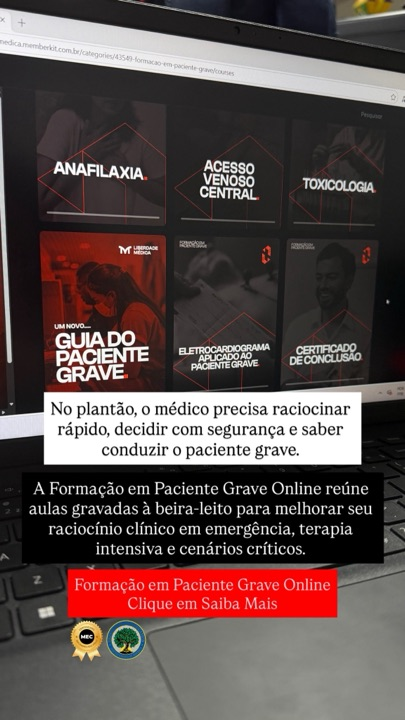
Médico(a), a Formação em Paciente grave é a única formação online em que você aprende com casos reais. As aulas foram gravadas dentro do hospital, beira leito. Assim,…
Botão: Saiba mais ver anúncio ↗
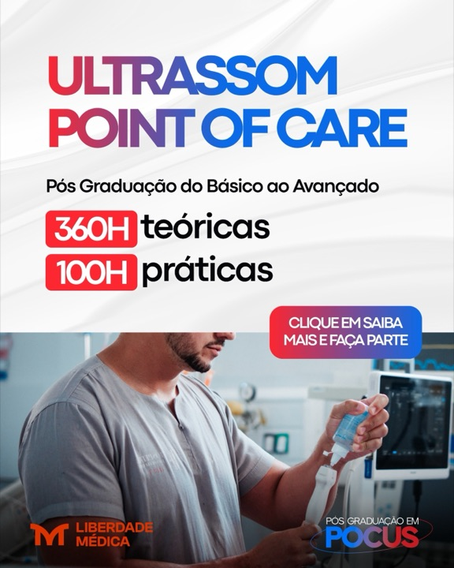
Você ainda toma decisões clínicas sem acesso imediato às informações que o ultrassom pode oferecer? A Pós-Graduação em POCUS da Liberdade Médica prepara você para…
Botão: Ver detalhes ver anúncio ↗
08
Você Radiologista · cursos de ultrassom e ressonância para residentes e radiologistas
Biblioteca de anúncios ↗ Página no Facebook ↗
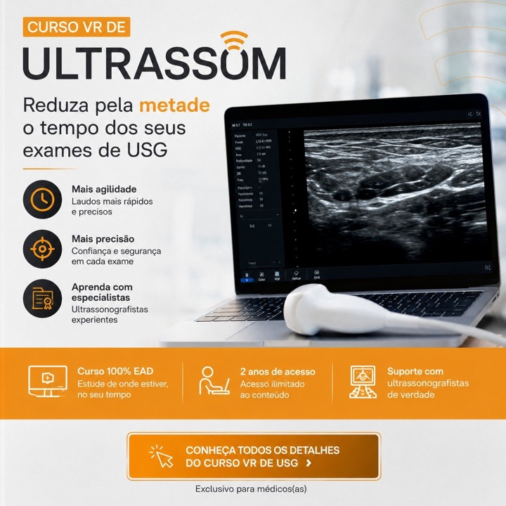
Você que é Residente em Radiologia, ou Médico Radiologista, se sente seguro para identificar e diferenciar estruturas? Eu sei que você já se confundiu muito — e ainda se…
Botão: Saiba mais ver anúncio ↗
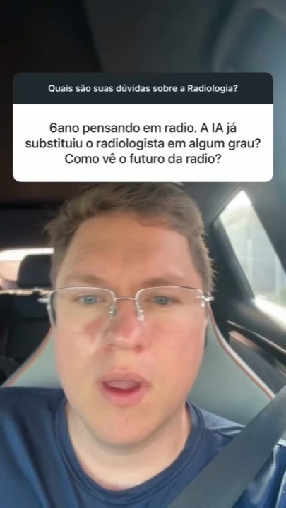
O principal impacto atual da IA na Radiologia...
Botão: Perfil do Instagram ver anúncio ↗
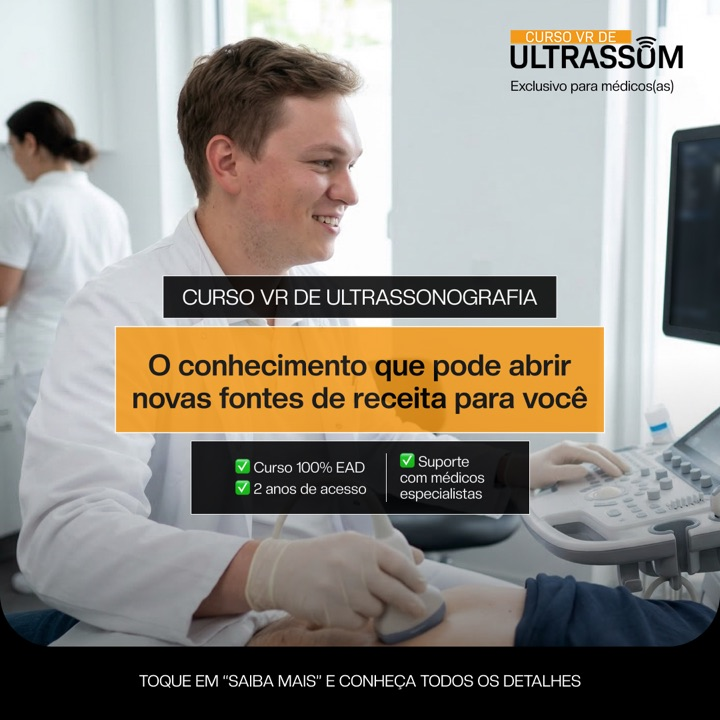
Você sente que perde muito tempo ajustando parâmetros ou duvidando de imagens no meio de um atendimento? Otimizar o seu tempo de exame é a chave para aumentar a sua…
Botão: Saiba mais ver anúncio ↗
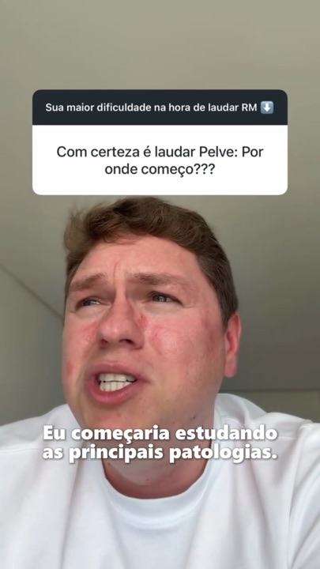
🧠 Por que a pelve é tão desafiadora na ressonância magnética? Porque é uma área com: 🔎 Muitas patologias 📚 Muito conteúdo para estudar ⚠️ Achados que podem gerar dúvida…
Botão: Sem botão ver anúncio ↗
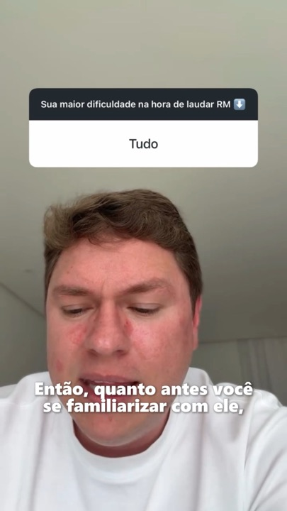
🧲 R1 precisa começar a estudar ressonância magnética? Quanto antes, melhor. 👇 A ressonância é um método com muitos detalhes, novas informações e uma curva de aprendizado…
Botão: Sem botão ver anúncio ↗
09
Dr. Augusto Teixeira · Escola do Ultrassom, cursos por assinatura
Biblioteca de anúncios ↗ Página no Facebook ↗
Os conteúdos mais buscados da Ultrassonografia em um único lugar. A Escola do Ultrassom não é apenas mais um curso ou pós-graduação, é a primeira escola de…
Botão: Saiba mais ver anúncio ↗
Médico ultrassonografista, preparei um breve vídeo de 5 minutos para você entender o que está acontecendo com a Ultrassonografia no Brasil. 👉 Clique em Saiba Mais.
Botão: Sem botão ver anúncio ↗
Preparei um breve vídeo de 5 minutos para você entender o que está acontecendo com a Ultrassonografia no Brasil. 👉 Clique em Saiba Mais.
Botão: Sem botão ver anúncio ↗
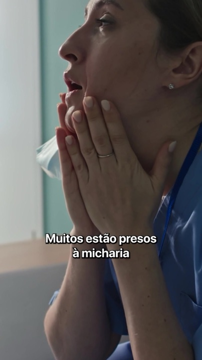
Os conteúdos mais buscados de Ultrassonografia em um único lugar. A Escola do Ultrassom não é apenas mais um curso ou pós-graduação, é a primeira escola de…
Botão: Ver detalhes ver anúncio ↗
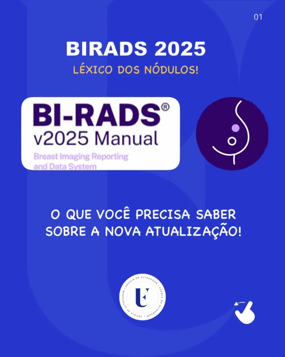
BI-RADS 2025: O léxico dos nódulos mudou e você precisa saber o que é diferente ❗️ Se você ainda descreve nódulos com o vocabulário da 5ª edição (2013), este carrossel é…
Botão: Perfil do Instagram ver anúncio ↗
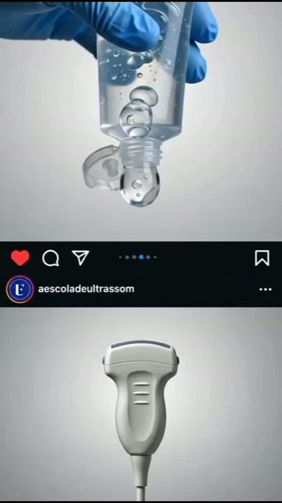
Prepare o gel e o transdutor. A Escola de Ultrassom está preparando mais uma black fantástica.
Botão: Sem botão ver anúncio ↗
10
Escola online de medicina fetal · e-book, curso de Doppler, mentoria e pós
Biblioteca de anúncios ↗ Página no Facebook ↗
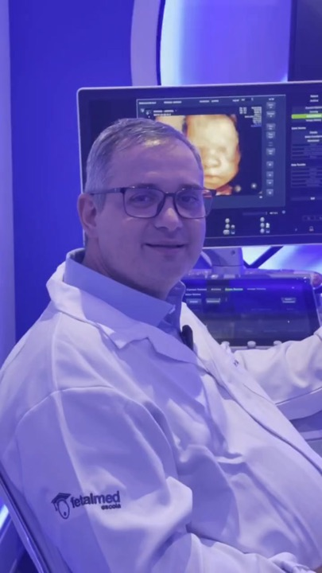
[EXCLUSIVO PARA MÉDICOS] Você sabe exatamente quando um feto está realmente restrito… ou apenas pequeno? RCIU em gestação gemelar exige critérios específicos,…
Botão: Ver detalhes ver anúncio ↗
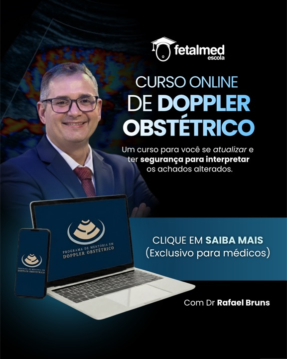
[EXCLUSIVO PARA MÉDICOS] Você já travou diante de um ducto venoso alterado no 3º trimestre? Ou viu uma diástole zero na cerebral média e ficou em dúvida sobre o que…
Botão: Ver detalhes ver anúncio ↗
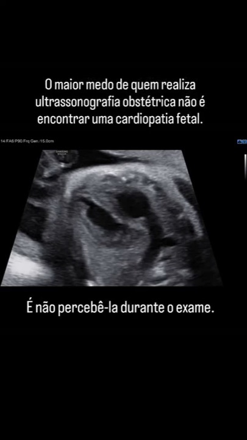
Felizmente, isso pode ser evitado quando você sabe exatamente onde olhar e quais sinais nunca devem passar despercebidos. O rastreamento das cardiopatias congênitas não…
Botão: Perfil do Instagram ver anúncio ↗
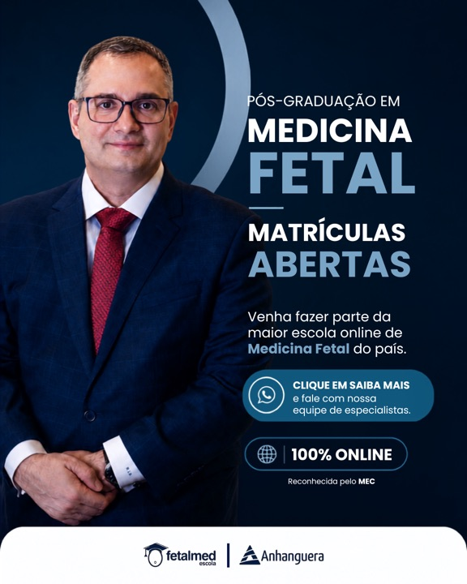
[EXCLUSIVO PARA MÉDICOS] Sua pós-graduação em medicina fetal não precisa fechar seu consultório. Não precisa de viagem para outro estado. Não precisa de hotel. Não…
Botão: Saiba mais ver anúncio ↗
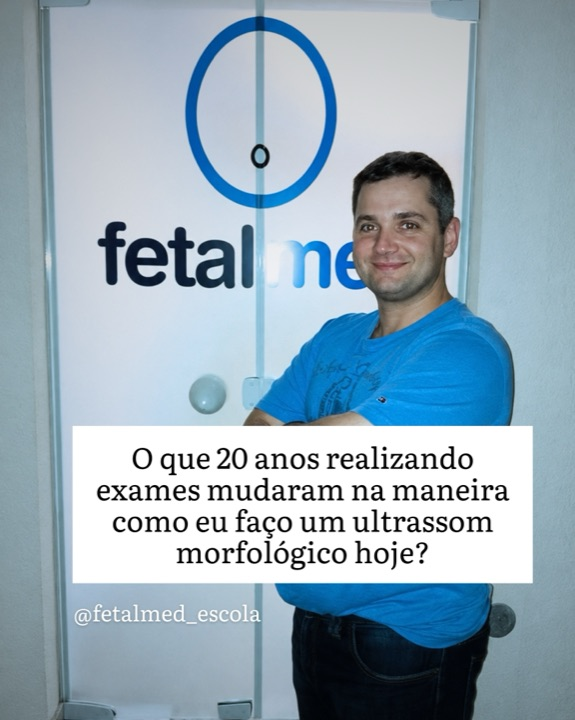
O mais importante é que a forma de conduzirmos o exame continue evoluindo junto com a experiência.🚀
Botão: Ver detalhes ver anúncio ↗
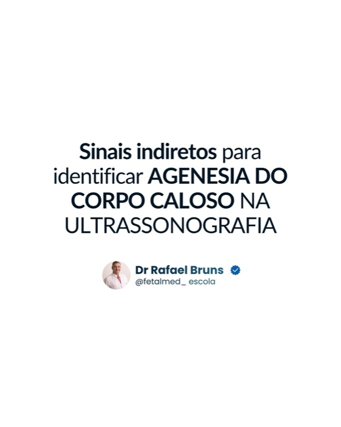
Você já conhecia esses sinais? Se você faz ultrassonografia obstétrica é fundamental conhecer esses sinais que dão a “dica” do diagnóstico. Quer se aprimorar no exame…
Botão: WhatsApp ver anúncio ↗
11
Curso online de ecocardiografia · Eco Primeiros Passos e Eco na Emergência
Biblioteca de anúncios ↗ Página no Facebook ↗
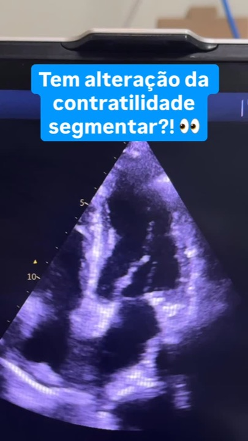
Nao vai esquecer de dizer também a Fração de Ejeção, hein?! 👀 Quem ja garantiu o lugar no ECO na Emergência já assistiu à aula sobre avaliação sistematizada da…
Botão: Sem botão ver anúncio ↗
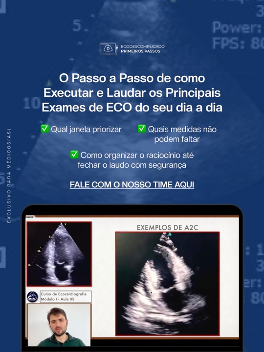
Aprenda um passo a passo para executar e laudar os principais exames de ecocardiografia desde a escolha das janelas e medidas essenciais até a organização do raciocínio…
Botão: Saiba mais ver anúncio ↗
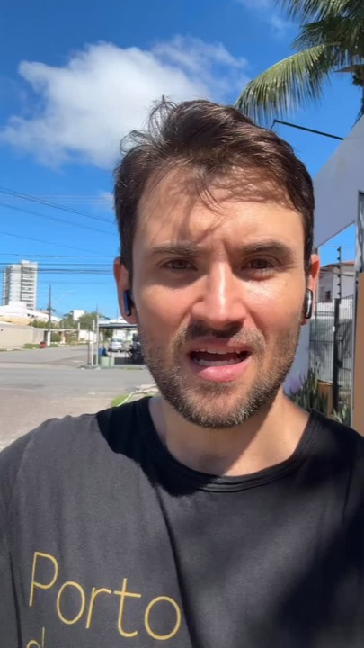
O padrão-ouro não é o padrão-ouro por acaso . Na avaliação de gravidade da estenose mitral reumatica, a planimetria 2D é mais do que suficiente na maioria dos casos… .…
Botão: Perfil do Instagram ver anúncio ↗
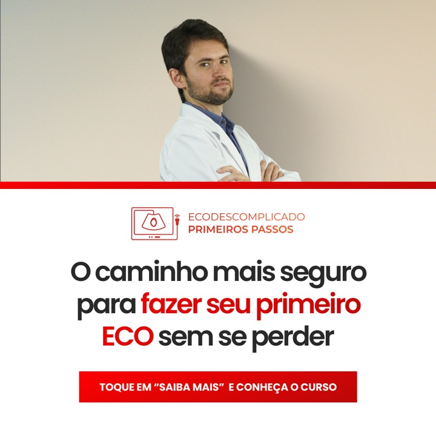
Médico(a), dar o primeiro passo na Ecocardiografia não precisa ser complicado. Se você quer sair do zero e ter segurança para realizar o seu primeiro exame completo, o…
Botão: Saiba mais ver anúncio ↗
12
Curso de ecodoppler vascular para médicos
Biblioteca de anúncios ↗ Página no Facebook ↗
Caso de aluno CAREVASC
Botão: Perfil do Instagram ver anúncio ↗
Alunos no carevasc de março 2025
Botão: Perfil do Instagram ver anúncio ↗
Você sabe avaliar uma estenose em segmento femoropoplíteo? Sabe os critérios diretos e indiretos?
Botão: Perfil do Instagram ver anúncio ↗
Depoimento do nosso aluno @heliobmed
Botão: Perfil do Instagram ver anúncio ↗
Depoimento da Dra @casfarias que veio do Amazonas participar do CAREVASC.
Botão: Perfil do Instagram ver anúncio ↗
Carevasc: referência em ensino de Ecodoppler.
Botão: Perfil do Instagram ver anúncio ↗
13
Pós-graduação em radiologia de cabeça e pescoço
Biblioteca de anúncios ↗ Página no Facebook ↗
Cabeça e Pescoço é uma das áreas mais detalhadas da radiologia. Por isso, a formação precisa ir além da teoria. Na CEP Expert, você percorre uma jornada estruturada que…
Botão: Ver detalhes ver anúncio ↗
Reconhecer alterações sutis exige mais do que conhecer a teoria. Exige repertório de imagem, contato com diferentes apresentações e raciocínio diagnóstico aplicado à…
Botão: Ver detalhes ver anúncio ↗
14
Dr. Juliano Limas · POCUS para médicos (POCUS DAY, Plano POCUS)
Biblioteca de anúncios ↗ @julianolimas_pocus ↗
POCUS DAY é o treinamento de imersão presencial em Pocus ou Ultrassonografia Point-of-Care do Método Pocus e LIMAS Protocol. Depois de passar pelo Pocus Day voce estará…
Botão: Perfil do Instagram ver anúncio ↗
No acesso vascular guiado por ultrassom, pequenos ajustes fazem toda a diferença. Neste trecho, ao visualizar a agulha tocando a parede superior do vaso, fica claro que…
Botão: Perfil do Instagram ver anúncio ↗
Acesso Venoso Central Guiado por Pocus (USG Point-of-Care) é uma habilidade fundamental para todo médico que atende pacientes críticos, agudos e graves! Dominar os…
Botão: Perfil do Instagram ver anúncio ↗
POCUS DAY é o treinamento médico de imersão presencial em Pocus ou Ultrassonografia Point-of-Care do Método Pocus e LIMAS Protocol. Depois de passar pelo Pocus Day voce…
Botão: Perfil do Instagram ver anúncio ↗
PLANO POCUS é um projeto inédito no Brasil, desenhado para todo médico disposto a aprender Pocus e realizar o *Teu 1o Exame de Pocus*. O Plano Pocus tem por objetivo…
Botão: Perfil do Instagram ver anúncio ↗
15
Intervenção ecoguiada na coluna · Imersão USPINE (Novo Hamburgo, RS)
Biblioteca de anúncios ↗ @leandrodini_ ↗
Intervenção ecoguiada na prática - Imersão em Novo Hamburgo-RS. 2 dias de treinamento do zero ao avançado em ultrassom para tratamento da dor na coluna e quadril: ✅…
Botão: Saiba mais ver anúncio ↗
Veja o que nossos alunos acham da imersão Uspine de intervenção ecoguiada no tratamento da dor. Faça sua aplicação para receber a oferta completa com bônus.
Botão: Obter oferta ver anúncio ↗
Momentos da última turma da imersão Uspine de ultrassom. Faça sua aplicação para receber a oferta completa com bônus.
Botão: Cadastre-se ver anúncio ↗
Que turma bacana! Quarta turma da nossa Imersão USPINE - Intervenção Ecoguiada na Coluna. Uma honra receber colegas médicos de enorme expertise em suas especialidades:…
Botão: Perfil do Instagram ver anúncio ↗
TBT do mês passado, de um fim de semana especial com colegas incríveis que vieram estar conosco na imersão USPINE, Intervenção Ecoguiada na Coluna. Voem! Contem com a…
Botão: Perfil do Instagram ver anúncio ↗
16
POCUS e procedimentos ecoguiados · parceria com o Instituto Dante Pazzanese
Biblioteca de anúncios ↗ @vexus_ensino ↗
🎯 POCUS Essencial: um pouco mais da nossa imersão prática! 🫀 Muita mão na massa 📍Casos reais 📡 Ultrassonografia à beira-leito 🔥 Revisão + prática intensiva É assim que…
Botão: Perfil do Instagram ver anúncio ↗
Médico, dá pra dominar o POCUS do básico ao avançado — sem depender da agenda de um curso presencial. São 25h de teoria, 15 módulos e +40 videoaulas com a chancela do…
Botão: WhatsApp ver anúncio ↗
Você já fez curso de POCUS e ainda trava na hora de pegar o aparelho no plantão? Isso não é falta de teoria. É falta de prática real. Na imersão presencial da VEXUS você…
Botão: WhatsApp ver anúncio ↗
Médico, você ainda faz procedimento invasivo às cegas? 🫀 Punção por referência anatômica tem uma taxa de complicação que o ultrassom derruba. No curso Procedimentos…
Botão: WhatsApp ver anúncio ↗
Médico, tem uma diferença enorme entre ver POCUS no slide e fazer o exame numa pessoa internada na sua frente. No POCUS Essencial você passa 2 dias praticando de…
Botão: WhatsApp ver anúncio ↗
Médico plantonista, segurança no atendimento pediátrico começa pela imagem. O POCUS Pediátrico tem prática com crianças internadas no Instituto Dante Pazzanese e turma…
Botão: WhatsApp ver anúncio ↗
17
Escola online de radiologia · pós-graduação em MSK
Biblioteca de anúncios ↗ Página no Facebook ↗
A prova do CBR exige mais do que dedicação. Exige saber por onde começar. A prova tem um padrão. Temas que se repetem, formatos que a banca prefere, conteúdos que…
Botão: Ver detalhes ver anúncio ↗
Radiologista, a rotina de laudos consome todo o seu dia e não sobra tempo para estudar? O segredo é ter o conteúdo já organizado por área e nível de complexidade para…
Botão: Saiba mais ver anúncio ↗
Você consegue fechar esse laudo? 🩻 Analise as imagens, reúna os achados e tente chegar ao diagnóstico antes de conferir a resposta. Comenta LAUDO para receber o laudo…
Botão: Perfil do Instagram ver anúncio ↗
Se você é Médico Radiologista e o MSK é a área que você quer dominar de verdade, presta atenção nisso. Está aberta a lista de espera da Pós-Graduação em Radiologia…
Botão: Saiba mais ver anúncio ↗
O curso de Ultrassonografia mais completo do Brasil! Faça parte da maior comunidade de Ultrassonografistas do país. Corra, garanta o seu lugar e conheça a verdadeira…
Botão: Saiba mais ver anúncio ↗
18
Medicina da dor · imersão prática de infiltrações e bloqueios (São José do Rio Preto)
Biblioteca de anúncios ↗ Página no Facebook ↗
Médico, você trata dor? Então presta atenção nisso. Nos dias 26 e 27 de setembro em São José do Rio Preto, você vai participar de uma imersão 100% prática, com hands-on…
Botão: Ver detalhes ver anúncio ↗
Médico, você trata dor? Então presta atenção nisso. Nos dias 10 e 11 de outubro, em São José do Rio Preto, você vai participar de uma imersão 100% prática, com hands-on…
Botão: Cadastre-se ver anúncio ↗
19
Formação em ultrassonografia cinesiológica para fisioterapeutas (São Paulo)
Biblioteca de anúncios ↗ Página no Facebook ↗
A experiência de quem viveu a Formação Sonacademy. Dr. Alberto Serrate tem vasta experiência no tratamento em atletas de alto rendimento e compartilha sua percepção…
Botão: WhatsApp ver anúncio ↗
Existe um momento na carreira em que experiência sozinha já não basta. O fisioterapeuta que cresce hoje é aquele que consegue: ver melhor, decidir com mais precisão e…
Botão: Fale conosco ver anúncio ↗
Ultrassonografia não é apenas enxergar uma imagem. É aprender a interpretá-la, integrá-la ao raciocínio clínico e utilizá-la com segurança na tomada de decisão. Na…
Botão: Fale conosco ver anúncio ↗
20
Escola de pós-graduação e cursos intensivos para médicos
Biblioteca de anúncios ↗ Página no Facebook ↗
Tem médico assistindo. E tem médico aprendendo na prática. No Dia de Monitor, não é só sobre ver. É sobre fazer, corrigir e evoluir.
Botão: Ver detalhes ver anúncio ↗
A evolução no ultrassom é real! 🚀 Nossos monitores, Dr. Lucas e Dra. Isabelle, compartilham como o aprendizado no Cetrus transformou o conhecimento deles em pouco tempo.
Botão: Sem botão ver anúncio ↗
Curso Intensivo em Radiofrequência e Bloqueios de Articulações Guiados por Ultrassom com Treinamento em Cadáver Fresh Frozen Aprenda na prática com professores renomados…
Botão: Cadastre-se ver anúncio ↗
O Cetrus entrega o que mais de 70% dos médicos sentem falta após a formação: prática real, estrutura completa e mentoria com especialistas renomados. Seja um…
Botão: Inscrever-se agora ver anúncio ↗
Pós-Graduação em Ultrassonografia Geral, Musculoesquelética e Vascular - Cetrus Estude na Escola de maior Referência em Ultrassom do Brasil com Professores Renomados e a…
Botão: Cadastre-se ver anúncio ↗
21
Cursos de ultrassonografia (mamas, tireoide, medicina interna)
Biblioteca de anúncios ↗ Página no Facebook ↗
Venha para a Ultra-X Ensino, novas turmas de Ultrassonografia das Mamas e Medicina Interna estão com matrículas abertas. Saiba mais clicando no link na Bio.✅
Botão: WhatsApp ver anúncio ↗
A ultrassonografia é uma das habilidades que mais encurtam o caminho entre esforço e valorização na medicina. Seu próximo nível começa aqui. Comece agora!! Matrículas…
Botão: WhatsApp ver anúncio ↗
Feedback da nossa aluna, Dra. Lunalva Veras, da turma de ultrassonografia em Medicina Interna. Mais uma profissional se destacando com conhecimento e prática de…
Botão: WhatsApp ver anúncio ↗
Matrículas abertas para os cursos de ultrassonografia das mamas e medicina interna. Faça sua matricula agora ou saiba mais sobre os cursos que temos disponíveis para…
Botão: Perfil do Instagram ver anúncio ↗
Matrículas abertas para a próxima turma de Ultrassonografia das Mamas✅ link na bio!
Botão: Perfil do Instagram ver anúncio ↗
Matrículas abertas para os cursos: - Ultrassonografia das Mamas - Ultrassonografia da Tireoide - Ultrassonografia em Ginecologia e Obstetrícia com Transvaginal. Para…
Botão: Perfil do Instagram ver anúncio ↗
Duas imagens de ultrassom lado a lado, paciente A e paciente B (sem identificar ninguém), e a pergunta na capa. No segundo quadro, o Dr. explica em 40 segundos por que a resposta não é a óbvia, ou conta um “pediram X, era Y” (“Pediram ultrassom de um nódulo no tornozelo. Era uma hérnia com nervo.”). Um caso por peça, a mesma legenda, e o destino é a Biblioteca de Casos Clínicos. É o formato da Dra. Renata Teixeira e da Cardiopapers.
Transdutor na mão, a imagem na tela dividida e uma regra por vídeo, como a que ele usa para separar túnel do carpo de hanseníase, ou um “não pule esse passo ao laudar nervo”. As 70 aulas gravadas já têm dezenas de trechos assim; é cortar e legendar, tirando qualquer menção a data, chat ou “ao vivo”. É o formato que a Dra. Renata mantém no ar há 447 dias e a Dra. Claudia, há 323.
Imagem parada com a frase grande sobre a foto do Dr. no ambulatório, no estilo do Marcelo Farani, e uma versão em vídeo contando a origem: começou como paciente, com a mão perdendo força, e não achou quem ensinasse ultrassom de nervos no Brasil. Fecha com “Médico,” na tela e leva para a Imersão Prática, sem data e sem preço na arte.